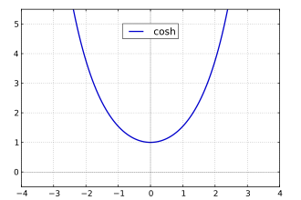

En mathématiques, on appelle fonctions hyperboliques les fonctions cosinus hyperbolique,
sinus hyperbolique et tangente hyperbolique.
Elles sont utilisées en analyse pour le calcul intégral, la résolution des équations
différentielles mais aussi en géométrie hyperbolique.
Définitions
Sinus hyperbolique
Le sinus hyperbolique \(\sinh\) est définie comme étant la partie impaire de la fonction
exponentielle :
$$
\quad \begin{align}
\mathbb{R} & \overset{\sinh}{\longrightarrow} \mathbb{R} \\
x & \longmapsto \frac{\mathrm{e}^x - \mathrm{e}^{-x} }{2}
\end{align}
$$
La fonction \(\sinh\) (ou \(\mathrm{sh}\)) est une bijection de classe \(C^{\infty}\) de
\(\mathbb{R}\) dans \(\mathbb{R}\) strictement croissante, et impaire.
Graphique de la courbe \(y=\sinh(x)\).
Sa dérivée est le cosinus hyperbolique.
Cosinus hyperbolique
Le cosinus hyperbolique \(\cosh\) est définie comme étant la partie paire de la fonction
exponentielle :
$$
\quad \begin{align}
\mathbb{R} & \overset{\cosh}{\longrightarrow} [1,+\infty[ \\
x & \longmapsto \frac{\mathrm{e}^x + \mathrm{e}^{-x} }{2}
\end{align}
$$
La fonction \(\cosh\) (ou \(\mathrm{ch}\)) est une application de classe \(C^{\infty}\) de
\(\mathbb{R}\) dans \([1,+\infty[\) strictement croissante sur \(\mathbb{R^+}\) et paire.

Graphique de la courbe \(y=\cosh(x)\).
Sa dérivée est le sinus hyperbolique.
Tangente hyperbolique
La tangente hyperbolique \(\tanh\) est définie par
$$
\quad \begin{align}
\mathbb{R} & \overset{\tanh}{\longrightarrow} ]-1,1[ \\
x & \longmapsto \frac{\sinh(x)}{\cosh(x)}
\end{align}
$$
La fonction \(\tanh\) (ou \(\mathrm{th}\)) est une bijection de classe \(C^{\infty}\) de
\(\mathbb{R}\) dans \(]-1,1[\) strictement croissante et impaire.
Graphique de la courbe \(y=\tanh(x)\).
Sa dérivée est \(\frac{1}{\cosh^2} = 1 - \tanh^2\).
Propriétés
Par construction,
$$
\quad \mathrm{e}^x = \cosh(x) + \sinh(x)
$$
et
$$
\quad \mathrm{e}^{-x} = \cosh(x) - \sinh(x)
$$
On en déduit que :
$$
\quad \cosh^2(x) - \sinh^2(x) = 1
$$
De même que les points \((\cos t, \sin t)\) décrivent un cercle lorsque \(t\) parcourt
\(\mathbb{R}\), les points \((\cosh t, \sinh t)\) décrivent une branche d’hyperbole.
Les fonctions hyperboliques satisfont à des relations très ressemblantes aux identités
trigonométriques. En fait, la règle d’Osborn dit que l’on peut convertir n’importe quelle
identité trigonométrique en une identité hyperbolique en la développant complètement à
l’aide de puissances entières de sinus et cosinus, changeant \(\sin\) en \(\sinh\) et
\(\cos\) en \(\cosh\), et remplaçant le signe de chaque terme qui contient un produit de
deux sinus en son opposé.
Des formules d’Euler, on déduit immédiatement :
$$
\quad \begin{align}
& \cos(x) = \cosh(\mathrm{i}x) \\
& \mathrm{i}\sin(x) = \sinh(\mathrm{i}x)
\end{align}
$$
ou encore :
$$
\quad \begin{align}
& \cosh(x) = \cos(\mathrm{i}x) \\
& \sinh(x) = -\mathrm{i}\sin(\mathrm{i}x)
\end{align}
$$
Lien avec les hyperboles
Le nom fonctions hyperboliques vient essentiellement du fait que les fonctions sinus et
cosinus hyperboliques jouent pour l’hyperbole le même rôle que les fonctions sinus et
cosinus circulaires pour le cercle unité.
Comparaison cercle et hyperbole.
Par exemple, si \(M\) est le point de coordonnées \((\cos(t),\sin(t))\) sur le cercle
trigonométrique (d’équation \(x^2+y^2=1\)), avec \(t \in [0,\pi/2]\), alors l’aire du
domaine délimité par le cercle, le segment \([OM]\) et l’axe des abscisses est égale à
\(t/2\).
De même, si \(M\) est le point de coordonnées \((\cosh(t),\sinh(t))\) sur l’hyperbole
d’équation \(x^2-y^2=1\), avec \(t\ge 0\), alors l’aire du domaine délimité par l’hyperbole,
le segment \([OM]\) et l’axe des abscisses est égale à \(t/2\).